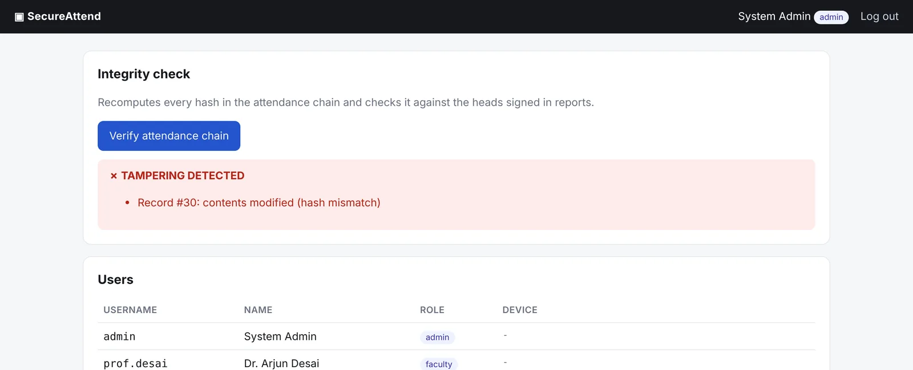

7.1 Attack Lab
The script scripts/attacks.py attacks the running server over HTTPS, acting as two demo students: Alice (in class) and Bob (absent). It simulates phones with real ECDSA keys, so every request looks exactly like one from the browser. Each attempt is recorded in the security event log and appears live on the faculty screen.
7.2 Results
| # | Attack | Scenario | Defence | Result |
|---|---|---|---|---|
| 1 | Double marking | Alice scans twice | Unique (session, student) | Blocked (409) |
| 2 | Request replay | Captured signed request resent byte-for-byte | Nonce table | Blocked |
| 3 | Forged QR token | Token built for the next window with a guessed tag | HMAC-SHA256 | Blocked |
| 4 | Proxy attendance | Alice logs in as Bob and scans from her phone | ECDSA device binding | Blocked (403) |
| 5 | Device takeover | Alice re-binds Bob's account to her phone | One device per account | Blocked (409) |
| 6 | Screenshot relay | QR photo sent to Bob, scanned 21 s later | 10 s time window | Blocked |
| 7 | Privilege escalation | Student calls close-session endpoint | RBAC | Blocked (403) |
| 8 | Privilege escalation | Student calls admin API | RBAC | Blocked (403) |
| 9 | Brute force | Repeated password guesses on Bob's account | Lockout (5 tries, 5 min) | Locked |
| 10 | Report forgery | Bob added to the present list in a signed report | Ed25519 signature | Invalid |
| 11 | Naive DB edit | Alice's record changed to Bob in SQLite | SHA-256 hash chain | Detected |
| 12 | Smart DB edit | Same edit, then every later hash recomputed | Chain head in signed report | Detected |
$ python -m scripts.attacks ... 13/13 behaved as expected # 12 attacks blocked + 1 honest scan accepted
7.3 Tamper Detection

Each record's hash includes the previous record's hash, so changing any field breaks that record's hash. An attacker who recomputes every later hash makes the chain consistent again, but the head of the chain was pinned inside each Ed25519-signed report when the session closed. The recomputed head no longer matches, and the report cannot be re-signed without the private key.
7.4 Limitations
| Limitation | Why | Mitigation / future work |
|---|---|---|
| Student hands over their own phone | The device is genuine; no QR scheme can tell who holds it | Biometric unlock per scan (WebAuthn / passkeys) |
| First-to-bind an unused account | A friend with the password can bind an account that has no device yet | Admin-approved device binding at semester start; one device per phone across accounts |
| Very fast relays | A forwarded QR may still work within 10–20 s | Enable the classroom-subnet check; shorter window |
| Server compromise | Whoever holds the master key can mint tokens | Hardware security module; per-faculty signing keys |
| Self-signed TLS on LAN | Phones show a certificate warning once | Locally trusted CA or a hosted domain with a public certificate |